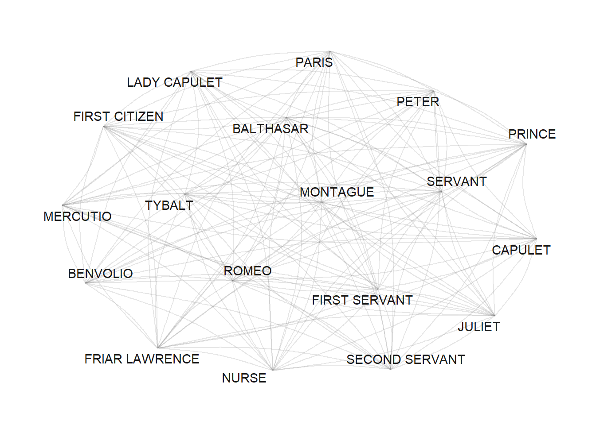
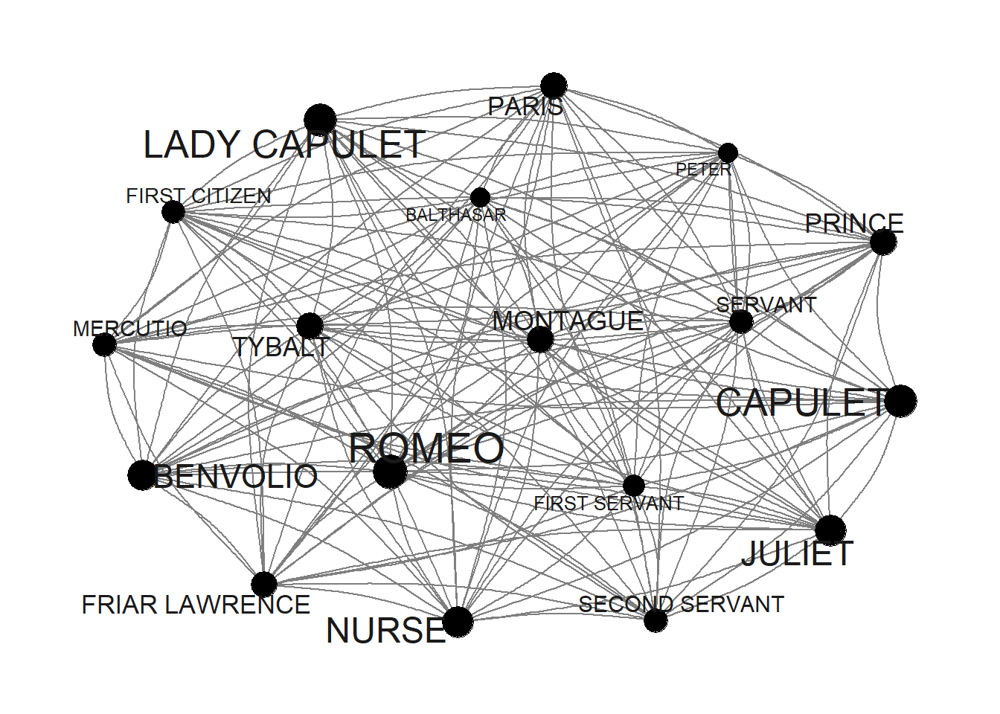
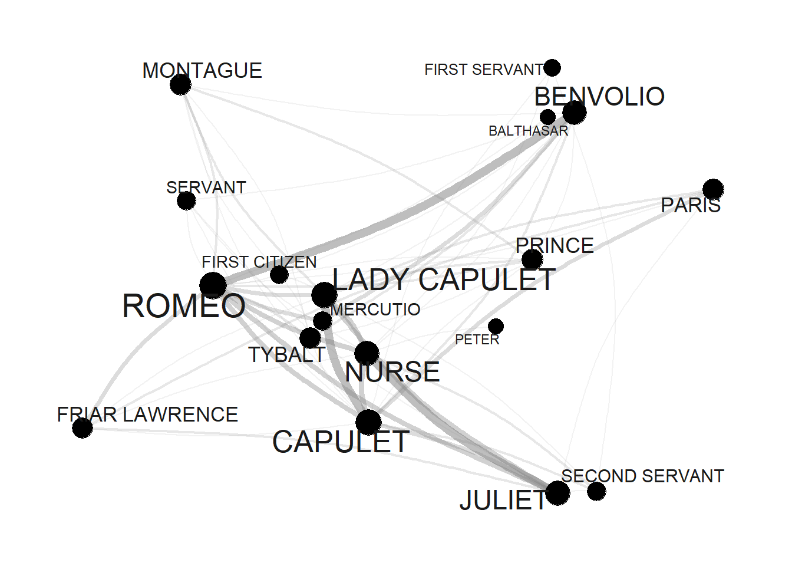
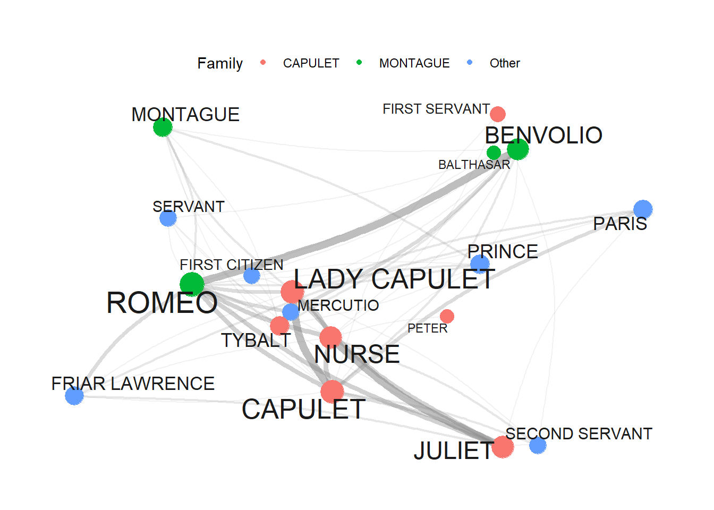
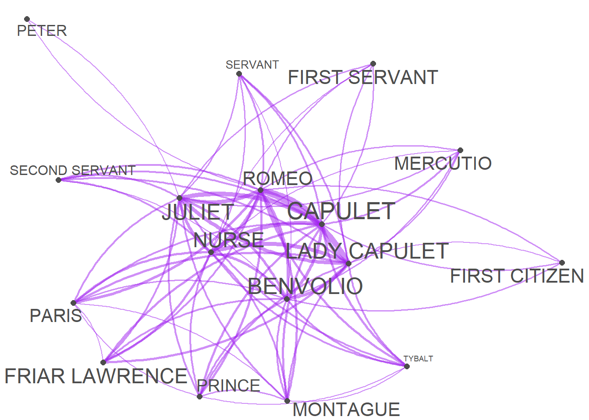

Network Analysis using R
Martin Schweinberger
2022-09-13

Introduction

This tutorial introduces network analysis using R. Network analysis is a method for visualization that can be used to represent various types of data. This tutorial is aimed at beginners and intermediate users of R with the aim of showcasing how to perform network analysis based on textual data and how to visualize network graphs using R. The aim is not to provide a fully-fledged analysis but rather to show and exemplify selected useful methods associated with network analysis.
In addition to being a visualization technique, networks have certain statistical properties that can be compared which makes network analysis a very useful procedure. To this end, this tutorial shows how to create and modify network graphs.
How can you display the relationship between different elements, be they authors, characters, or words?
The entire R markdown document for the sections below can be downloaded here. If you want to render the Rmarkdown notebook on your machine, i.e. knitting the document to a html or pdf file, you need to make sure that you have R installed and you also need to download the bibliography file and store it in the same folder where you store the Rmd file.
Here is a link to an interactive version of this tutorial on Google Colab. The interactive tutorial is based on a Jupyter notebook of this tutorial. This interactive Jupyter notebook allows you to execute code yourself and - if you copy the Jupyter notebook - you can also change and edit the notebook, e.g. you can change code and upload your own data.
This tutorial builds on a tutorial on plotting collocation networks by Guillaume Desagulier, a tutorial on network analysis by offered by Alice Miller from the Digital Observatory at the Queensland University of Technology, and this tutorial by Andreas Niekler and Gregor Wiedemann.
What is Text Analysis?
The most common way to visualize relationships between entities are networks (Silge and Robinson 2017, 131–37). Networks, also called graphs, consist of nodes (typically represented as dots) and edges (typically represented as lines) and they can be directed or undirected networks.
In directed networks, the direction of edges is captured. For instance, the exports of countries. In such cases the lines are directed and typically have arrows to indicate direction. The thickness of lines can also be utilized to encode information such as frequency of contact.
The example that we will be concerned with focuses on the first type of data as it is by far the most common way in which relationships are coded.To show how to create a network, we will have a look at the network that the characters in William Shakespeare’s Romeo and Juliet form.
Preparation and session set up
This tutorial is based on R. If you have not installed R or are new to it, you will find an introduction to and more information how to use R here. For this tutorials, we need to install certain packages from an R library so that the scripts shown below are executed without errors. Before turning to the code below, please install the packages by running the code below this paragraph. If you have already installed the packages mentioned below, then you can skip ahead and ignore this section. To install the necessary packages, simply run the following code - it may take some time (between 1 and 5 minutes to install all of the libraries so you do not need to worry if it takes some time).
# install packages
install.packages("flextable")
install.packages("GGally")
install.packages("ggraph")
install.packages("gutenbergr")
install.packages("igraph")
install.packages("Matrix")
install.packages("network")
install.packages("quanteda")
install.packages("sna")
install.packages("tidygraph")
install.packages("tidyverse")
install.packages("tm")
install.packages("tibble")
install.packages("quanteda.textplots")
# install klippy for copy-to-clipboard button in code chunks
install.packages("remotes")
remotes::install_github("rlesur/klippy")Next, we load the packages.
# set options
options(stringsAsFactors = F) # no automatic data transformation
options("scipen" = 100, "digits" = 4) # suppress math annotation
# activate packages
library(flextable)
library(GGally)
library(ggraph)
library(gutenbergr)
library(igraph)
library(Matrix)
library(network)
library(quanteda)
library(sna)
library(tidygraph)
library(tidyverse)
library(tm)
library(tibble)
# activate klippy for copy-to-clipboard button
klippy::klippy()Once you have installed R, RStudio, and have also initiated the session by executing the code shown above, you are good to go.
Data preparation
This section shows how to create a network visualization with the network and the GGally packages. The network we will generate shows how often characters in William Shakespeare’s Romeo and Juliet occurred in the same scene. The issue we want to investigate here relates to networks of personas in Shakespeare’s Romeo and Juliet and we thus load this famous work of fiction.
Creating a matrix
Now that we have loaded the data, we need to split the data into scenes. Scenes during which personas leave or enter will have to be split too so that we arrive at a table that contains the personas that are present during a sub-scene.
# load data
rom <- read.delim("https://slcladal.github.io/data/romeo_tidy.txt", sep = "\t")actscene | person | contrib | occurrences |
ACT I_SCENE I | BENVOLIO | 24 | 7 |
ACT I_SCENE I | CAPULET | 2 | 9 |
ACT I_SCENE I | FIRST CITIZEN | 1 | 2 |
ACT I_SCENE I | LADY CAPULET | 1 | 10 |
ACT I_SCENE I | MONTAGUE | 6 | 3 |
ACT I_SCENE I | PRINCE | 1 | 3 |
ACT I_SCENE I | ROMEO | 16 | 14 |
ACT I_SCENE I | TYBALT | 2 | 3 |
ACT I_SCENE II | BENVOLIO | 5 | 7 |
ACT I_SCENE II | CAPULET | 3 | 9 |
ACT I_SCENE II | PARIS | 2 | 5 |
ACT I_SCENE II | ROMEO | 11 | 14 |
ACT I_SCENE II | SERVANT | 8 | 3 |
ACT I_SCENE III | JULIET | 5 | 11 |
ACT I_SCENE III | LADY CAPULET | 11 | 10 |
We now transform that table into a co-occurrence matrix.
rome <- crossprod(table(rom[1:2]))
diag(rome) <- 0
romeo <- as.data.frame(rome)Persona | BALTHASAR | BENVOLIO | CAPULET | FIRST CITIZEN | FIRST SERVANT |
BALTHASAR | 0 | 0 | 1 | 0 | 0 |
BENVOLIO | 0 | 0 | 3 | 2 | 1 |
CAPULET | 1 | 3 | 0 | 1 | 2 |
FIRST CITIZEN | 0 | 2 | 1 | 0 | 0 |
FIRST SERVANT | 0 | 1 | 2 | 0 | 0 |
The data shows how often a character has appeared with each other character in the play - only Friar Lawrence and Friar John were excluded because they only appear in one scene where they talk to each other.
Network Visualization
There are various different ways to visualize a network structure. We will focus on two packages for network visualization here and exemplify how you can visualize networks in R.
Tidy Networks
A great way to generate network graphs is to combine functions from the igraph, the ggraph, and the tidygraph packages. The advantages are that the syntax of for creating the networks aligns with the tidyverse style of writing R and that the graphs can be modified very easily.
To generate network graphs in this way, we define the nodes and we can also add information about the odes that we can use later on (such as frequency information).
va <- romeo %>%
dplyr::mutate(Persona = rownames(.),
Occurrences = rowSums(.)) %>%
dplyr::select(Persona, Occurrences) %>%
dplyr::filter(!str_detect(Persona, "SCENE"))Persona | Occurrences |
BALTHASAR | 9 |
BENVOLIO | 34 |
CAPULET | 46 |
FIRST CITIZEN | 14 |
FIRST SERVANT | 12 |
FRIAR LAWRENCE | 20 |
JULIET | 36 |
LADY CAPULET | 45 |
MERCUTIO | 15 |
MONTAGUE | 22 |
NURSE | 38 |
PARIS | 21 |
PETER | 9 |
PRINCE | 22 |
ROMEO | 54 |
SECOND SERVANT | 16 |
SERVANT | 15 |
TYBALT | 22 |
Now, we define the edges, i.e., the connections between nodes and, again, we can add information in separate variables that we can use later on.
ed <- romeo %>%
dplyr::mutate(from = rownames(.)) %>%
tidyr::gather(to, Frequency, BALTHASAR:TYBALT) %>%
dplyr::mutate(Frequency = ifelse(Frequency == 0, NA, Frequency))from | to | Frequency |
BALTHASAR | BALTHASAR | |
BENVOLIO | BALTHASAR | |
CAPULET | BALTHASAR | 1 |
FIRST CITIZEN | BALTHASAR | |
FIRST SERVANT | BALTHASAR | |
FRIAR LAWRENCE | BALTHASAR | 1 |
JULIET | BALTHASAR | 1 |
LADY CAPULET | BALTHASAR | 1 |
MERCUTIO | BALTHASAR | |
MONTAGUE | BALTHASAR | 1 |
NURSE | BALTHASAR | |
PARIS | BALTHASAR | 1 |
PETER | BALTHASAR | |
PRINCE | BALTHASAR | 1 |
ROMEO | BALTHASAR | 2 |
Now that we have generated tables for the edges and the nodes, we can generate a graph object.
ig <- igraph::graph_from_data_frame(d=ed, vertices=va, directed = FALSE)We will also add labels to the nodes as follows:
tg <- tidygraph::as_tbl_graph(ig) %>%
tidygraph::activate(nodes) %>%
dplyr::mutate(label=name)When we now plot our network, it looks as shown below.
# set seed
set.seed(12345)
# edge size shows frequency of co-occurrence
tg %>%
ggraph(layout = "fr") +
geom_edge_arc(colour= "gray50",
lineend = "round",
strength = .1,
alpha = .1) +
geom_node_text(aes(label = name),
repel = TRUE,
point.padding = unit(0.2, "lines"),
colour="gray10") +
theme_graph(background = "white") +
guides(edge_width = FALSE,
edge_alpha = FALSE)
Now, we use the number of occurrences to define vertex size (or node size): the more often a character appears, the bigger it will appear in the graph.
v.size <- V(tg)$Occurrences
# inspect
v.size## [1] 9 34 46 14 12 20 36 45 15 22 38 21 9 22 54 16 15 22When we include this into our network, it looks as shown below.
# set seed
set.seed(12345)
# edge size shows frequency of co-occurrence
tg %>%
ggraph(layout = "fr") +
geom_edge_arc(colour= "gray50",
lineend = "round",
strength = .1) +
geom_node_point(size=log(v.size)*2) +
geom_node_text(aes(label = name),
repel = TRUE,
point.padding = unit(0.2, "lines"),
size=sqrt(v.size),
colour="gray10") +
scale_edge_width(range = c(0, 2.5)) +
scale_edge_alpha(range = c(0, .3)) +
theme_graph(background = "white") +
guides(edge_width = FALSE,
edge_alpha = FALSE)
Next, we modify the edges by using frequency information to define weights: the more often two characters appear in the same scene, the bigger the edge.
E(tg)$weight <- E(tg)$Frequency
# inspect weights
head(E(tg)$weight, 10)## [1] NA NA 1 NA NA 1 1 1 NA 1When we include this into our network, it looks as shown below.
# set seed
set.seed(12345)
# edge size shows frequency of co-occurrence
tg %>%
ggraph(layout = "fr") +
geom_edge_arc(colour= "gray50",
lineend = "round",
strength = .1,
aes(edge_width = weight,
alpha = weight)) +
geom_node_point(size=log(v.size)*2) +
geom_node_text(aes(label = name),
repel = TRUE,
point.padding = unit(0.2, "lines"),
size=sqrt(v.size),
colour="gray10") +
scale_edge_width(range = c(0, 2.5)) +
scale_edge_alpha(range = c(0, .3)) +
theme_graph(background = "white") +
theme(legend.position = "top") +
guides(edge_width = FALSE,
edge_alpha = FALSE)
Finally, we define colors so that characters belonging to the same family have the same color.
# define colors (by family)
mon <- c("ABRAM", "BALTHASAR", "BENVOLIO", "LADY MONTAGUE", "MONTAGUE", "ROMEO")
cap <- c("CAPULET", "CAPULET’S COUSIN", "FIRST SERVANT", "GREGORY", "JULIET", "LADY CAPULET", "NURSE", "PETER", "SAMPSON", "TYBALT")
oth <- c("APOTHECARY", "CHORUS", "FIRST CITIZEN", "FIRST MUSICIAN", "FIRST WATCH", "FRIAR JOHN" , "FRIAR LAWRENCE", "MERCUTIO", "PAGE", "PARIS", "PRINCE", "SECOND MUSICIAN", "SECOND SERVANT", "SECOND WATCH", "SERVANT", "THIRD MUSICIAN")
# create color vectors
Family <- dplyr::case_when(sapply(tg, "[")$nodes$name %in% mon ~ "MONTAGUE",
sapply(tg, "[")$nodes$name %in% cap ~ "CAPULET",
TRUE ~ "Other")
# inspect colors
Family## [1] "MONTAGUE" "MONTAGUE" "CAPULET" "Other" "CAPULET" "Other"
## [7] "CAPULET" "CAPULET" "Other" "MONTAGUE" "CAPULET" "Other"
## [13] "CAPULET" "Other" "MONTAGUE" "Other" "Other" "CAPULET"Now, that we have created the different objects and defined their properties, we can finally visualize the finished network.
# set seed
set.seed(12345)
# edge size shows frequency of co-occurrence
tg %>%
ggraph(layout = "fr") +
geom_edge_arc(colour= "gray50",
lineend = "round",
strength = .1,
aes(edge_width = weight,
alpha = weight)) +
geom_node_point(size=log(v.size)*2,
aes(color=Family)) +
geom_node_text(aes(label = name),
repel = TRUE,
point.padding = unit(0.2, "lines"),
size=sqrt(v.size),
colour="gray10") +
scale_edge_width(range = c(0, 2.5)) +
scale_edge_alpha(range = c(0, .3)) +
theme_graph(background = "white") +
theme(legend.position = "top") +
guides(edge_width = FALSE,
edge_alpha = FALSE)
Quanteda Networks
The quanteda package contains many very useful functions for analyzing texts. Among these functions is the textplot_network function which provides a very handy way to display networks. The advantage of the network plots provided by or generated with the quanteda package is that you can create them with very little code. However, this comes at a cost as these visualizations cannot be modified easily (which means that their design is not very flexible compared to other methods for generating network visualizations).
In a first step, we transform the text vectors of the romeo data into a document-feature matrix using the dfm function.
# create a document feature matrix
romeo_dfm <- quanteda::as.dfm(romeo)
# create feature co-occurrence matrix
romeo_fcm <- quanteda::fcm(romeo_dfm)
# inspect data
head(romeo_fcm)## Feature co-occurrence matrix of: 6 by 18 features.
## features
## features BALTHASAR BENVOLIO CAPULET FIRST CITIZEN FIRST SERVANT
## BALTHASAR 1 25 31 11 6
## BENVOLIO 0 39 93 39 27
## CAPULET 0 0 65 42 39
## FIRST CITIZEN 0 0 0 6 10
## FIRST SERVANT 0 0 0 0 3
## FRIAR LAWRENCE 0 0 0 0 0
## features
## features FRIAR LAWRENCE JULIET LADY CAPULET MERCUTIO MONTAGUE
## BALTHASAR 20 26 31 11 17
## BENVOLIO 53 87 99 42 55
## CAPULET 74 131 117 52 65
## FIRST CITIZEN 18 32 36 24 29
## FIRST SERVANT 17 40 42 12 15
## FRIAR LAWRENCE 15 61 72 23 32
## [ reached max_nfeat ... 8 more features ]This feature-co-occurrence matrix can then serve as the input for the textplot_network function which already generates a nice network graph. The network graph can then be modified or customized easily by defining the arguments of the textplot_network function. To see how and which arguments can be modified, you can use ?textplot_network.
quanteda.textplots::textplot_network(romeo_fcm,
min_freq = .5,
edge_alpha = 0.5,
edge_color = "purple",
vertex_labelsize = log(rowSums(romeo_fcm)),
edge_size = 2)
iGraph Networks
Wiedemann and Niekler (2017) have written a very recommendable tutorial on co-occurrence analysis and they propose an alternative for generating complex network visualization for co-occurrences. Their approach is to create and customize a graph object based on the iGraph package. To see how to create sophisticated network graphs using the iGraph package, see this tutorial on analyzing collocations or this tutorial.
Network Statistics
In addition to visualizing networks, we will analyze the network and extract certain statistics about the network that tell us about structural properties of networks. In the present case, we will extract
To extract the statistics, we use the edge object generated above (called ed) and remove all rows that contain missing values (NA) and then repeat each combination as often as it occurred based on the value in the Frequency column.
dg <- ed %>%
tidyr::drop_na()
dg <- dg[rep(seq_along(dg$Frequency), dg$Frequency), 1:2]
rownames(dg) <- NULLThe resulting object (dg) looks as shown below.
from | to |
CAPULET | BALTHASAR |
FRIAR LAWRENCE | BALTHASAR |
JULIET | BALTHASAR |
LADY CAPULET | BALTHASAR |
MONTAGUE | BALTHASAR |
PARIS | BALTHASAR |
PRINCE | BALTHASAR |
ROMEO | BALTHASAR |
ROMEO | BALTHASAR |
CAPULET | BENVOLIO |
CAPULET | BENVOLIO |
CAPULET | BENVOLIO |
FIRST CITIZEN | BENVOLIO |
FIRST CITIZEN | BENVOLIO |
FIRST SERVANT | BENVOLIO |
We now generate an edge list from the dg object and then extract the degree centrality of all edges in the dg object by using the degree function from the igraph package. The degree centrality reflects the counts of how many edges each node has. The most central node is the one with with the highest value of ties.
dgg <- graph.edgelist(as.matrix(dg), directed = T)
# extract degree centrality
igraph::degree(dgg) ## CAPULET BALTHASAR FRIAR LAWRENCE JULIET LADY CAPULET
## 92 18 40 72 90
## MONTAGUE PARIS PRINCE ROMEO BENVOLIO
## 44 42 44 108 68
## FIRST CITIZEN FIRST SERVANT MERCUTIO NURSE PETER
## 28 24 30 76 18
## SECOND SERVANT SERVANT TYBALT
## 32 30 44To extract the most central node, we can use the max() function to extract the name of the node with the most edges.
names(igraph::degree(dgg))[which(igraph::degree(dgg) == max(igraph::degree(dgg)))]## [1] "ROMEO"We now extract the betweenness centrality of all edges in the dg object by using the betweenness function from the igraph package. Betweenness centrality reflects how connected nodes are. More precisely, it provides a measure of how important noes are for information flow between nodes in a network. The node with the highest betweenness centrality creates the shortest paths in the network. For any two nodes we can find the shortest path, i.e. the path with the lowest number of steps that are necessary to get from the node A to node B. If a node C facilitates the shortest path between A and B, then it means C is important to the efficient flow of information between A and B.
Thus, betweenness effectively counts how many shortest paths each node is on. The higher a node’s betweenness, the more important they are for the efficient flow of goods in a network.
igraph::betweenness(dgg)## CAPULET BALTHASAR FRIAR LAWRENCE JULIET LADY CAPULET
## 15.62322 0.00000 1.09118 5.55471 16.27686
## MONTAGUE PARIS PRINCE ROMEO BENVOLIO
## 2.18220 1.85943 2.18220 27.62437 9.61512
## FIRST CITIZEN FIRST SERVANT MERCUTIO NURSE PETER
## 0.03846 0.00000 0.84421 7.40145 0.26842
## SECOND SERVANT SERVANT TYBALT
## 0.00000 0.23874 3.19941To extract the most central node, we can use the max() function to extract the name of the node with the most edges.
names(igraph::betweenness(dgg))[which(igraph::betweenness(dgg) == max(igraph::betweenness(dgg)))]## [1] "ROMEO"In addition, we extract the closeness statistic of all edges in the dg object by using the closeness function from the igraph package. Closeness centrality refers to the shortest paths between nodes. The distance between two nodes represents the length of the shortest path between them. The closeness of a node is the average distance from that node to all other nodes.
igraph::closeness(dgg)## CAPULET BALTHASAR FRIAR LAWRENCE JULIET LADY CAPULET
## 0.05556 0.03846 0.04167 0.05000 0.05882
## MONTAGUE PARIS PRINCE ROMEO BENVOLIO
## 0.04545 0.04545 0.04545 0.05882 0.05263
## FIRST CITIZEN FIRST SERVANT MERCUTIO NURSE PETER
## 0.03846 0.04000 0.04000 0.04762 0.03846
## SECOND SERVANT SERVANT TYBALT
## 0.04000 0.04167 0.04762To extract the node with the highest closeness, we can use the max() function to extract the name of the node with the most edges.
names(igraph::closeness(dgg))[which(igraph::closeness(dgg) == max(igraph::closeness(dgg)))]## [1] "LADY CAPULET" "ROMEO"We have reached the end of this tutorial and you now know how to create and modify networks in R and how you can highlight aspects of your data.
Citation & Session Info
Schweinberger, Martin. 2022. Network Analysis using R. Brisbane: The University of Queensland. url: https://slcladal.github.io/net.html (Version 2022.09.13).
@manual{schweinberger2022net,
author = {Schweinberger, Martin},
title = {Network Analysis using R},
note = {https://slcladal.github.io/net.html},
year = {2022},
organization = "The University of Queensland, Australia. School of Languages and Cultures},
address = {Brisbane},
edition = {2022.09.13}
}sessionInfo()## R version 4.2.1 (2022-06-23)
## Platform: x86_64-pc-linux-gnu (64-bit)
## Running under: Ubuntu 22.04.1 LTS
##
## Matrix products: default
## BLAS: /usr/lib/x86_64-linux-gnu/blas/libblas.so.3.10.0
## LAPACK: /usr/lib/x86_64-linux-gnu/lapack/liblapack.so.3.10.0
##
## locale:
## [1] LC_CTYPE=en_AU.UTF-8 LC_NUMERIC=C
## [3] LC_TIME=en_AU.UTF-8 LC_COLLATE=en_AU.UTF-8
## [5] LC_MONETARY=en_AU.UTF-8 LC_MESSAGES=en_AU.UTF-8
## [7] LC_PAPER=en_AU.UTF-8 LC_NAME=C
## [9] LC_ADDRESS=C LC_TELEPHONE=C
## [11] LC_MEASUREMENT=en_AU.UTF-8 LC_IDENTIFICATION=C
##
## attached base packages:
## [1] stats graphics grDevices datasets utils methods base
##
## other attached packages:
## [1] tm_0.7-8 NLP_0.2-1 forcats_0.5.1
## [4] stringr_1.4.0 dplyr_1.0.9 purrr_0.3.4
## [7] readr_2.1.2 tidyr_1.2.0 tibble_3.1.7
## [10] tidyverse_1.3.2 tidygraph_1.2.1 sna_2.7
## [13] statnet.common_4.6.0 quanteda_3.2.1 network_1.17.2
## [16] Matrix_1.4-1 igraph_1.3.2 gutenbergr_0.2.1
## [19] ggraph_2.0.5 GGally_2.1.2 ggplot2_3.3.6
## [22] flextable_0.7.3
##
## loaded via a namespace (and not attached):
## [1] fs_1.5.2 lubridate_1.8.0
## [3] httr_1.4.3 RColorBrewer_1.1-3
## [5] tools_4.2.1 backports_1.4.1
## [7] bslib_0.3.1 utf8_1.2.2
## [9] R6_2.5.1 DBI_1.1.3
## [11] colorspace_2.0-3 withr_2.5.0
## [13] tidyselect_1.1.2 gridExtra_2.3
## [15] quanteda.textplots_0.94.1 compiler_4.2.1
## [17] rvest_1.0.2 cli_3.3.0
## [19] xml2_1.3.3 officer_0.4.3
## [21] labeling_0.4.2 slam_0.1-50
## [23] sass_0.4.1 scales_1.2.0
## [25] systemfonts_1.0.4 digest_0.6.29
## [27] rmarkdown_2.14 base64enc_0.1-3
## [29] pkgconfig_2.0.3 htmltools_0.5.2
## [31] dbplyr_2.2.1 fastmap_1.1.0
## [33] highr_0.9 readxl_1.4.0
## [35] rlang_1.0.4 jquerylib_0.1.4
## [37] farver_2.1.1 generics_0.1.3
## [39] jsonlite_1.8.0 zip_2.2.0
## [41] googlesheets4_1.0.0 magrittr_2.0.3
## [43] Rcpp_1.0.8.3 munsell_0.5.0
## [45] fansi_1.0.3 gdtools_0.2.4
## [47] viridis_0.6.2 lifecycle_1.0.1
## [49] stringi_1.7.8 yaml_2.3.5
## [51] MASS_7.3-58.1 plyr_1.8.7
## [53] grid_4.2.1 parallel_4.2.1
## [55] ggrepel_0.9.1 crayon_1.5.1
## [57] lattice_0.20-45 haven_2.5.0
## [59] graphlayouts_0.8.0 hms_1.1.1
## [61] klippy_0.0.0.9500 knitr_1.39
## [63] pillar_1.7.0 uuid_1.1-0
## [65] stopwords_2.3 fastmatch_1.1-3
## [67] reprex_2.0.1 glue_1.6.2
## [69] evaluate_0.15 modelr_0.1.8
## [71] data.table_1.14.2 renv_0.15.4
## [73] RcppParallel_5.1.5 tzdb_0.3.0
## [75] vctrs_0.4.1 tweenr_1.0.2
## [77] cellranger_1.1.0 gtable_0.3.0
## [79] polyclip_1.10-0 reshape_0.8.9
## [81] assertthat_0.2.1 xfun_0.31
## [83] ggforce_0.3.3 broom_1.0.0
## [85] coda_0.19-4 googledrive_2.0.0
## [87] viridisLite_0.4.0 gargle_1.2.0
## [89] ellipsis_0.3.2References
Silge, Julia, and David Robinson. 2017. Text Mining with R: A Tidy Approach. " O’Reilly Media, Inc.".
Wiedemann, Gregor, and Andreas Niekler. 2017. “Hands-on: A Five Day Text Mining Course for Humanists and Social Scientists in R.” In Proceedings of the Workshop on Teaching NLP for Digital Humanities (Teach4DH), Berlin, Germany, September 12, 2017., 57–65. http://ceur-ws.org/Vol-1918/wiedemann.pdf.